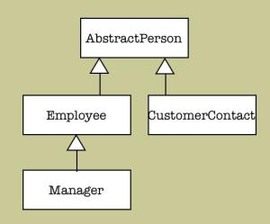

|
LOCAL DOCS
ONLINE RESOURCES |
| 8. Working with DataObjects
8.7 Handling Inheritance "Inheritance" is an Object Oriented concept absent in traditional RDBMS. Cayenne however allows to map a hierarchical class tree to a single base table (so called "single table inheritance"). Such mapping is described in detail in the Modeler Guide. The idea of single table inheritance is that a "class" of a database row is determined from the values in one or more columns of the base table. These columns are called "class designator columns".
8.7.1 Inheritance and new DataObjects Consider the following class hierarchy (also used in the Modeler Guide example): If a class designator column is "PERSON_TYPE", AbstractPerson class should define an attribute (for instance called "personType") that maps to PERSON_TYPE. This attribute is redundant and meanigless in Java, since person type is defined already by the Java class of the object, however we still have to keep it around so that when the new objects are saved, correct PERSON_TYPE data is stored in the database. Currently it is a developer responsibility to set "personType" value (or values of any other attributes that map to "class designator columns") when the new object is registered with DataContext. One way to take care of this is to override "setPersistenceState(..)" method on each DataObject class in the inheritance hierarchy to catch when the object is registered with DataContext:
8.7.2 Inheritance and SelectQueries When performing SelectQuery on a table that maps to inheritance hierarchy, Cayenne will only return rows that belong to root class of the query and all its subclasses. No superclasses or objects from parallel inheritance branches will be returned. For example executing a SelectQuery with Employee class as root will potentially return a mix of Employees and Managers (who are also Employees of course), but no CustomerContact objects:
The need to determine the correct class for each fetched database row makes queries on entities that use inheritance less efficient than the regular queries. If an application doesn't care about the query root class subclasses, the query can be optimized by explicitly turning off inheritance resolution. If this is done, the example above will return all Managers as instances of Employee class, not Manager class:
8.7.3 Current Inheritance Limitations Custom Types used in subclasses: As reported in JIRA issue CAY-207, SelectQueries performed using superclass as a root can't correctly resolve attributes mapped in subclasses to non-standard (or custom) Java types. Here "standard" mapping means Java class to JDBC type mapping defined in JDBC specification. |
| Copyright ©2001-2004 ObjectStyle Group |